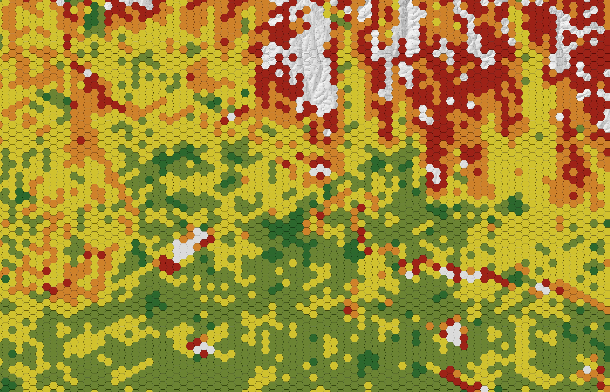
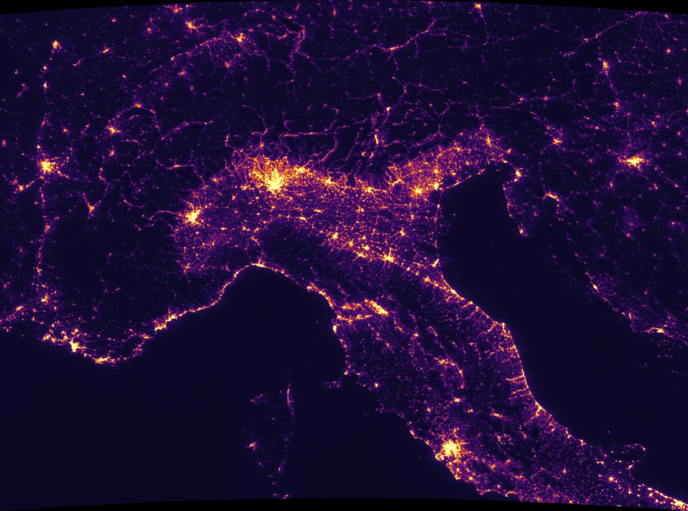

Davide Bortoletto
GIS Analyst · Spatial Planning & Remote Sensing
GIS Analyst with a Master's in Urban and Regional Planning (Università IUAV di Venezia). I bridge spatial planning and geospatial analysis — turning LiDAR, satellite imagery and multi-criteria datasets into decision-ready maps and models. My projects span renewable-energy siting (MCDA), infrastructure & vegetation risk (LiDAR), and land-use suitability, built on reproducible QGIS, GDAL and Python workflows. I'm currently extending my work into Google Earth Engine for environmental monitoring and urban-growth analysis.
Disponibile per ruoli GIS (analyst/specialist) in Italia e da remoto.

Utility-Scale Solar PV Siting & Strategic Zoning — Verona
GIS multi-criteria decision analysis (MCDA) to locate hotspots and strategic districts for utility-scale solar.

Powerline Vegetation Risk — LiDAR Analysis & Management Scenarios
LiDAR-based tree-fall risk model along an HV line, with a 5-year management-scenario comparison.

Air Quality vs. Urbanisation — NO₂ & Night-time Lights in the Po Valley
Satellite analysis of NO₂ pollution vs. night-time lights. Sentinel-5P × VIIRS, 2025.
Landing-Site Suitability on Mars — Multi-Criteria Analysis
Where would you land the first human base? MCDA on planetary data (MOLA, THEMIS, ice, insolation).